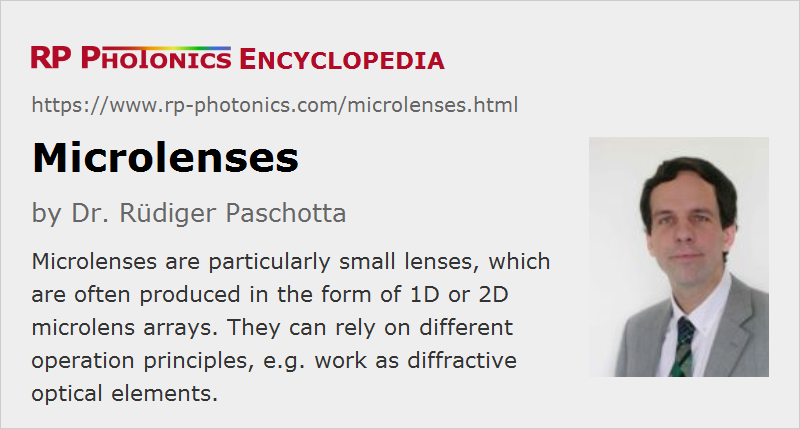

Microlenses
Definition: optical lenses of particularly small diameter, e.g. below 1 mm
More general term: lenses
German: Mikrolinsen
How to cite the article; suggest additional literature
Author: Dr. Rüdiger Paschotta
Microlenses (or micro-lenses) are optical lenses with a particularly small-diameter, e.g. below 1 mm. In some cases, they are even much smaller than that, down to the order of a few optical wavelengths. For such small structures, the phenomenon of diffraction starts to play a significant role, often degrading the performance.
Operation Principles of Microlenses
Microlenses can be based on different operation principles:
- Some of them simply work as refractive lenses, just as traditional large lenses. A radially varying change of optical phase, which is the essential function of a lens, is obtained from a radially varying thickness of the device.
- In order to keep the thickness very low despite a substantial dioptric power, one can use the shape of a Fresnel lens, where light is reflected by a set of concentric curved surfaces. However, in contrast to ordinary Fresnel lenses, one would typically dimension the steps such as to optimize the phase properties.
- Although diffraction is generally considered as detrimental, it is sometimes directly utilized (diffractive optics): there are diffractive microlenses based on diffraction as the basic operation principle. This is possible both with binary structures, having only two different height levels, and with continuous structures.
- Microlenses can also be realized as gradient-index lenses (GRIN lenses). These typically consist of two different transparent layers, where one of them (the substrate layer) has a homogeneous refractive index while the other one has a radially dependent refractive index. A thickness variation is then not needed, but both principles can also be combined.
Fabrication of Microlenses
Relatively large microlenses may be fabricated with similar techniques as traditional lenses, but modified optical fabrication techniques are required for smaller dimensions. Many of them are applied not to single lenses, but to microlens arrays (see below). Some examples:
- Microlens arrays can be made by injection molding or by embossing from some master form. This is done particularly with plastic (polymer) materials.
- There are printing methods, where microdroplets of a liquid polymer material are deposited on a plane surface to form lenslets. They can subsequently be hardened by UV irradiation which causes polymerization.
- Various techniques of photolithography are used for fabricating diffractive microlenses. Some of them can produce only binary structures, where a certain depth of a transparent material is either preserved or completely removed. In some cases, thermal reflow is applied after such a production step to transform step structures into curved lens structures. Some fabrication techniques are similar to those used for semiconductor chip production; this area is called wafer-level optics.
- There are also methods of lithography using ultrafast lasers or alternatively on ultra-precision diamond micro-drilling or diamond turning.
Some of those techniques are for quite high optical quality, and some even allow one to fabricate aspheric lenses.
Microlens Arrays
One can produce microlens arrays of one- or two-dimensional form, containing many microlenses which are usually fabricated together on a common substrate. Two-dimensional microlens arrays can for example have a rectangular or hexagonal pattern of lenses. See the article microlens arrays for more details.
Applications of Microlenses
There is a wide range of applications of microlenses. We begin with some examples for single lenses:
- If a microlens is placed just over the fiber core of an optical fiber, it can function as a fiber collimator or alternatively for launching light into a fiber. Note, however, that the beam radius is severely limited by the size of the lens.
- Similarly, the radiation from a laser diode may be collimated.
Some applications of microlens arrays are:
- A linear lens array can be used for collimating the radiation from all emitters of a diode bar (diode array).
- In integrated optics, lens arrays can be used to collimate the output of arrays of waveguides.
- As explained above, one uses microlens arrays where each lens is aligned with a pixel of a kind of photodetector array. That way, one can increase the sensitivity by reducing the loss of light on non-sensitive areas between the detector pixels. However, lenses in such a configuration cannot perform an imaging function.
- There are also imaging devices based on microlenses, used e.g. for photocopiers and photo cameras for smartphones. Also, one can make lightfield cameras.
- Some lens arrays are used in micro-optic beam homogenizers.
- Shack–Hartmann wavefront sensors can contain microlens arrays. Each lens produces a small beam focus, the position of which is related to the wavefront direction in front of the lens.
- Lens arrays can be used for generating reference beams in the interferometric characterization of large lenses.
Insects and various other animals have used microlenses as essential parts of compound eyes for millions of years.
Suppliers
The RP Photonics Buyer's Guide contains 17 suppliers for microlenses. Among them:
Questions and Comments from Users
Here you can submit questions and comments. As far as they get accepted by the author, they will appear above this paragraph together with the author’s answer. The author will decide on acceptance based on certain criteria. Essentially, the issue must be of sufficiently broad interest.
Please do not enter personal data here; we would otherwise delete it soon. (See also our privacy declaration.) If you wish to receive personal feedback or consultancy from the author, please contact him e.g. via e-mail.
By submitting the information, you give your consent to the potential publication of your inputs on our website according to our rules. (If you later retract your consent, we will delete those inputs.) As your inputs are first reviewed by the author, they may be published with some delay.
Bibliography
| [1] | T. Hou et al., “Fabrication, characterization, and applications of microlenses”, Appl. Opt. 54 (24), 7366 (2015), doi:10.1364/AO.54.007366 |
| [2] | W. Yuan et al., “Fabrication of microlens array and its application: a review”, Chinese Journal of Mechanical Engineering 31, 16 (2018), doi:10.1186/s10033-018-0204-y |
See also: microlens arrays, lenses, aspheric optics, diffractive optics, gradient-index lenses
and other articles in the category general optics
|  |
If you like this page, please share the link with your friends and colleagues, e.g. via social media:
These sharing buttons are implemented in a privacy-friendly way!